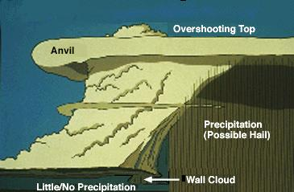
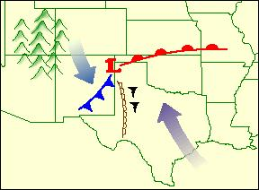
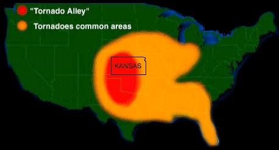

Article # 77
What are Tornadoes?


Chanten
Bobby Chanten
Lester Clements
Jessica Fraser
Tornadoes
Imagine yourself being at home one afternoon watching television. For some reason you walk to the front door to look outside. You notice the sky is getting darker by the minute. Not being educated about the weather, you do not know what is about to happen in the near future. You do not think anything of the dangers that could occur. So you go back to watch television. As you are watching television, a tornado watch appears on the lower left corner of the screen. You are thinking to yourself, “Tornado watches aren’t serious.” Then the tornado watch turned into a tornado warning. Now you are starting to get concerned, so you turn to one of the weather channels. The meteorologist tells you that a tornado touched down at the neighboring county, just southwest of the county you live in. Now the meteorologist says the tornado is now in your county. You start to panic because the storm is headed your way. Your mind takes over thinking the tornado is going to hit your home any moment. Moments later as you are still listening to the meteorologist, you hear that the storm has past over your county and that everything is ok. Now you have a sigh of relief. After all is said and done you say to yourself, “I am tired of going through this time and time again without knowing why.” Similar incidents have happened to the members of The Killatwisters. That is what drove us to research and answer the questions: how do tornadoes form and what force do they have, where is Tornado Alley and why is it where it is, and why is Arkansas hit by tornadoes?
Tornadoes are considered to be the most destructive forces of nature. A tornado is defined as “An intense, rotating column of air extending from the base of a thunderstorm cloud to the ground”, defined by Chad Palmer of the USA Today Weather Team (http://www.usatoday.com/weather/wconvcap.htm). The United States is the world’s capital for tornadoes. Tornadoes form with the combination of three components: moisture in the lower to mid levels of the atmosphere; unstable air, air that continues to rise once it begins to rise near the surface, and a lifting force. The most common type of lifting force is geothermal heating near the surface. As the air warms it becomes lighter and begins rising. Advancing masses of cool air, forces warm air upward and triggers thunderstorms. As the rising air begins to cool, the moisture in the air condenses to form clouds. The rising air is called an updraft. Tornadoes normally form at the front of an updraft. The moisture in the air falls back as precipitation, causing a downdraft. This illustration below will show how this happens and what it will look like. (http://tornadothewebpage.terrashare.com/facts.html).

This is why tornadoes are normally preceded by hail and rain. The tornado pulls all of the air in from around it, which feeds the tornado and causes strong winds that can reach up to 200 mph. Once a tornado has formed, it becomes a low-pressure vortex, an area that pulls air in due to the barometric pressure outside of it being higher than that in the vortex. That pulls air upward; this causes it to rotate. The low-pressure zone in a tornado continues to suck more air in. The warm air that enters the vortex rises and is cooled by the cold air in the atmosphere (http//www.usatoday.com/weather/wtwist1.htm).
At one time it was believed that tornadoes produced winds of about 500 mph; however, this belief was proven to be false. An average tornado has winds of less than 112 mph and a base of 400-500 feet wide. These tornadoes move along the ground between 20 to 50 mph and are limited to only a few minutes of travel. On the other hand, there are larger tornadoes that can produce winds of up to 250 mph; these tornadoes tend to have a base of around one mile wide. Tornadoes of this nature are extremely rare, but when they do strike they can be extremely deadly. The larger tornadoes can sometimes travel on the ground for over an hour.
To determine the strength of tornadoes, a scale was produced in 1971; this scale is called the Fujita-Pearson Tornado Intensity Scale. This scale was named after Prof. Tetsuya Theodore “Ted” Fujita also known as “Mr. Tornado” (http://www.usatoday.com/weather/tornado/fujita/wfujobit.htm). The scale can be seen below.
|
Scale Number |
Intensity Phrase |
Wind Speed |
Type of Damage |
|
F-0 |
Gale Tornado |
40-72 mph |
Some damage to chimneys; breaks branches off trees, pushes over shallow-rooted trees; damage to sign and billboards. |
|
F-1 |
Moderate Tornado |
73 -112 mph |
The lower limit is the beginning of hurricane wind speed; peels surface off roofs; mobile homes pushed off foundations or overturned; moving autos pushed off the road; attached garages may be destroyed. |
|
F2 |
Significant tornado |
113-157 mph |
Considerable damage. Roofs torn off frame houses; mobile homes demolished; boxcars pushed over; trees snapped or uprooted; light object missiles generated. |
|
F3 |
Severe tornado |
158-206 mph |
Roof and some walls torn off well-constructed houses; trains overturned; most trees in forest uprooted. |
|
F4 |
Devastating Tornado |
207-260 mph |
Well-constructed houses leveled; structures with well built foundations blown off some distance; cars thrown like large missiles. |
|
F5 |
Incredible Tornado |
261-318 mph |
Strong frame houses lifted off foundations and carried considerable distances to disintegrate; automobile sized missiles fly through the air in excess of 100 meters; trees debarked; steel re-inforced concrete structures badly damaged. |
|
F6 |
Inconceivable Tornado |
319-379 mph |
These winds are very unlikely. The small area of damage they might produce would probably not be recognizable along with the mess produced by F4 and F5 wind that would surround the F6 winds. Missiles, such as cars and refrigerators would do serious secondary damage that could not be directly identified as F6 damage. If this level is ever achieved, evidence for it might only be found in some manner of ground swirl pattern, for it may never be identifiable through engineering studies |
This is a picture of an F4 tornado. (http://www.spc.noaa.gov/faq/tornado/index.html#Forecasting)
Now that we know a little bit about what tornadoes are and how they form, let us take a look at where tornadoes strike. Throughout the world, the United States is one of the most common places for a tornado to hit. Breaking it down even further, the central United States is one of the most popular places for a tornado to strike. The central plains receive most of the tornado activity around April and May (http://search.britannica.com/frm_redir.jsp?query=tornado+alley&redir=http://tqjunior.thinkquest.org/4232/). The reason behind this is the topography of the United States. In the West lies the Rocky Mountains and in the East are the Appalachian Mountains. In between these two mountain ranges is the Central Plains. Warm moist air from the Gulf of Mexico and the Caribbean Sea moves a low, which is a mass of cold air that pushes warm air up quickly, moves over the Rocky Mountains and into the Central Plains. This diagram shows what happens. (http://www.usatoday.com/weather/wconvcap.htm)
When a warm air mass and a low-pressure area collide, they cause violent thunderstorms, which can produce tornadoes. “Tornado Alley” is the name people have given to the area in which this happens. Tornado Alley consists of ten states: Alabama, Arkansas, Florida, Iowa, Kansas, Mississippi, Missouri, Nebraska, Oklahoma, and Texas. This diagram will show Tornado Alley (http://www2.sunysuffolk.edu/mandias/honors/student/tornado/alley.htm).

Arkansas itself has a history of tornado activity. The reason behind this is because Arkansas lies in Tornado Alley. Tornadoes in Arkansas are just something that comes with the territory, so to say. On occasion tornadoes happen in Arkansas at times when tornadoes are not really expected. A lot of this has to do with our fluctuation in temperatures. In Arkansas it is not unusual to be 60 degrees in January. This all goes back to the warm moist air driving north from the Gulf of Mexico. This fluctuation is temperature is what gives us the rare tornadoes in January and February. January of ’99 is good example of this. Tornadoes ravaged Arkansas because of a cold front racing across the Ohio River Valley headed southeast. At this time, Arkansas was experiencing a warm air mass out of the Gulf. When these two collided the tornadoes where born (http://www.cnn.com/weather/9901/22/arkansas.tornadoes.01/index.html). The tornadoes of February ’01 are no different. Tornadoes also run across Arkansas southwest to northeast. This is due to the fact that a tornado will travel in the path of least resistance (http://www.todaysthv.com/weather/wxguide/page7.asp). The topography of Arkansas is such that causes this. If someone looks at a map, they would see I-30 running from Texarkana to Little Rock, and highway 167/67 runs from Little Rock to north of Jonesboro. This is the line that tornadoes like to follow. It is the line of least resistance.
In closing of this article, The Killatwisters hope we have done our duties of informing you on how tornadoes form and their strengths, where Tornado Alley is and why it is there, and why Arkansas is hit by tornadoes. Our purpose was to research specific questions that interest us the most, so we could educate those we know and love about the facts of tornadoes. The Killatwisters hope this article serves the purpose we set out for. Remember, you may not ever know a tornado is coming until it is to late.
References
“Arkansas Tornadoes.” CNN.com 2001: World Wide Web.
<http://www.cnn.com/weather/9901/22/arkansas.tornadoes.o1/index.htm1>.
“Forecasting.” Storm Prediction Center Jan. 99: World Wide Web.
<http://www.spc.noaa.gov/faq/tornado/index.htm1#Forcasting>.
“Mr. Tornado; Ted Fujita Dies at 78.” USA Today Jan. 99: World Wide Web.
<http://www.usatoday.com/weather/tornado/fujita/wfujobit.htm>.
Buckner, Ed. “Severe Weather Guide.” Today’s THV 11: World Wide Web.
<http://www.todaysthv.com/weather/wxguide/page7.asp>.
“Tornado Alley.” Professor Mandias ES17 Honors Class.
<http://www2.sunystuffolk.edu/mandias/honors/student/tornado/alley.htm>.
“Tornado Information: Understanding Tornadoes.” USA Today Feb. 2001: World Wide
Web. < http://www.usatoday.com/weather/tg/wtorwhat/wtorwhat.htm>.
“Tornado Information: Understanding Tornadoes.” USA Today Feb. 2001: World Wide
Web. <http://www.usatoday.com/weather/wtwist1.htm>.
“Tornado Information: Understanding Tornadoes.” USA Today Feb. 2001: World Wide
Web. <http://www.usatoday.com/weather/wconvap.htm>.
“Tornadoes.” The Tornado Web Page Oct. 13, 2000: World Wide Web.
<http://tornadothewebpage.terrashare.com/facts.htm1>.
“Tornado Project On-Line.” Britannica April 2000: World Wide Web.
<http://search.britannica.com/frm_redir.jsp?query=tornado+alley&redir=http:
tqjunior.thinkquest.org/4232/>.